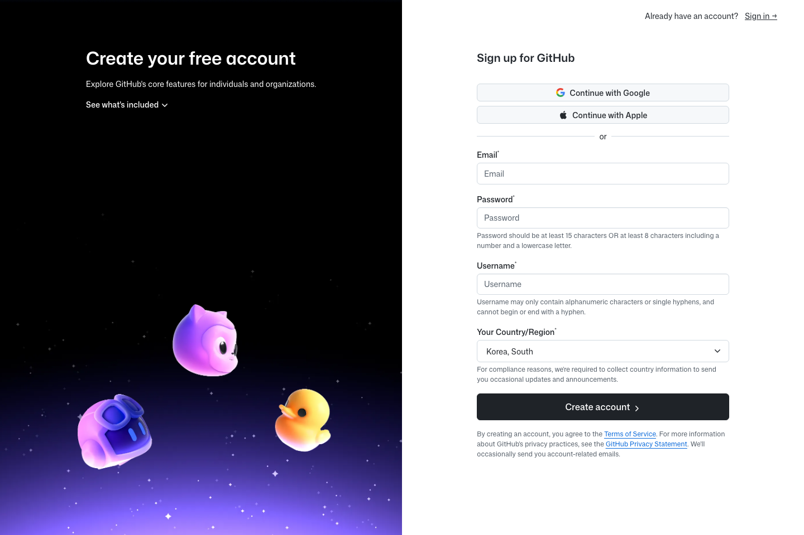
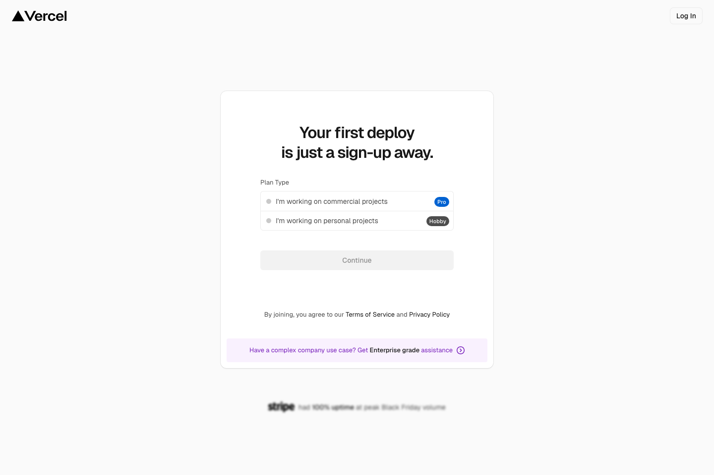

1. GitHub 가입
먼저 GitHub 계정 만들기
- GitHub 공식 가입 페이지 열기
- 이메일, 비밀번호, 사용자명, 국가/지역 입력
- 이메일 인증 완료
- 로그인 후 프로필은 나중에 정리해도 됨
핵심, 가입 완료, 이메일 인증 완료

필수 계정
GitHub는 저장과 제출 Claude Desktop은 1주차 공통 도구 Vercel은 배포 단계에서 사용
공개 가이드
1. GitHub 가입
핵심, 가입 완료, 이메일 인증 완료

2. Claude Desktop 준비
핵심, 1주차는 Claude Desktop 기준으로 함께 진행
3. Vercel 가입
핵심, 배포 직전에 준비해도 충분함

GitHub 추가 설정
GitHub 계정 만들기 이후, 이메일 인증 먼저, 가능하면 2단계 인증까지 설정
Vercel 추가 설정
이메일 가입도 가능, 하지만 첫 프로젝트 단계에서 결국 Git provider 연결 필요 수업에서는 GitHub 연동이 가장 자연스러운 흐름
로그인은 Vercel 탭에서 진행 · 설명은 이 가이드 탭에서 계속 확인
수업 전 확인
GitHub 조직 참여
공식 링크